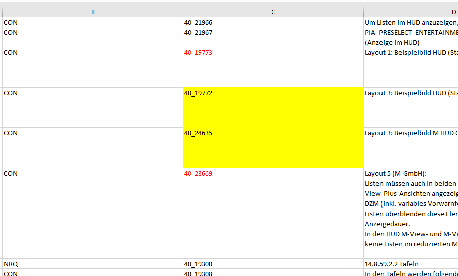

Traceability search
Contents:
The program searches an Excell sheet for two cell values,and remembers all the cells between those values.

Then it searches a Sequence file to see if the values from cells are present in test case.


If so,the Test Cases containing values from Excel file(Export from Doors) are checked inside the strategies pane.

Back to top
Start the program by clicking on 'SearchTraceability.bat'

You provide as input an Excel file,an uTAS Sequence file and two (or more)values to search between them.After that,click on 'Find' button.

Back to top
Click on 'Add' button.A new pair of text boxes should be visible.

Enter desired values and click 'Find' button
Back to top
- You should copy the contents of ReqFinder on your machine,otherwise it may not work
- All files should be contained in the same location
- Keep in mind that the search is performed for the first sheet of an Excel document
- You should not switch to another window after the autoclicking on 'Strategies' window was performed;otherwise the program won't select the TC's
-The process might be slow for large files(e.g. 1000 Test Cases);Just wait :))
Back to top